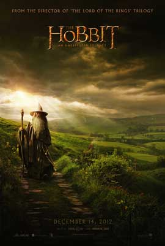
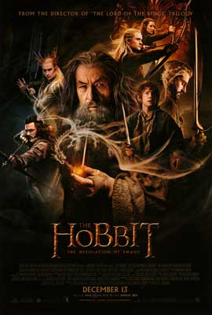
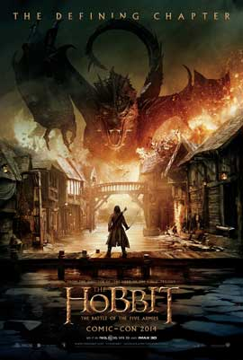

The Hobbit Films
"True courage is knowing not how to take a life, but when to spare it." - Gandalf, An Unexpected Journey
An Unexpected Journey
Bilbo Baggins (Martin Freeman) lives a simple life with his fellow hobbits in the shire, until the wizard Gandalf (Ian McKellen) arrives and convinces him to join a group of dwarves on a quest to reclaim the kingdom of Erebor. The journey takes Bilbo on a path through treacherous lands swarming with orcs, goblins and other dangers, not the least of which is an encounter with Gollum (Andy Serkis) and a simple gold ring that is tied to the fate of Middle Earth in ways Bilbo cannot even fathom.The screenplay was written by Fran Walsh, Philippa Boyens, Jackson, and Guillermo del Toro, who was originally chosen to direct before his departure from the project. The films take place in the fictional world of Middle-earth sixty years before the beginning of The Lord of the Rings, and follow hobbit Bilbo Baggins (Martin Freeman), who is convinced by the wizard Gandalf the Grey (Ian McKellen) to accompany thirteen dwarves, led by Thorin Oakenshield (Richard Armitage), on a quest to reclaim the Lonely Mountain from the dragon Smaug (voiced by Benedict Cumberbatch). The films also expand upon certain elements from the novel and other source material, such as Gandalf's investigation at Dol Guldur, and the pursuit of Azog and Bolg, who seek vengeance against Thorin and his ancestors. The films feature an ensemble cast that also includes James Nesbitt, Ken Stott, Evangeline Lilly, Lee Pace and Luke Evans, with several actors reprising their roles from The Lord of the Rings, including Cate Blanchett, Orlando Bloom, Ian Holm, Christopher Lee, Hugo Weaving, Elijah Wood and Andy Serkis. The films also feature Manu Bennett, Sylvester McCoy, Stephen Fry, Mikael Persbrandt, Barry Humphries, and Lawrence Makoare. Also returning for production, among others, were illustrators John Howe and Alan Lee, art director Dan Hennah, cinematographer Andrew Lesnie, and composer Howard Shore, while props were again crafted by Weta Workshop, with visual effects managed by Weta Digital.
The Desolation Of Smaug
Having survived the first part of their unsettling journey, Bilbo Baggins (Martin Freeman) and his companions (Ian McKellen, Richard Armitage) continue east. More dangers await them, including the skin-changer Beorn and the giant spiders of Milkwood. After escaping capture by the dangerous Wood Elves, Bilbo and the dwarves journey to Lake-town and, finally, to the Lonely Mountain, where they face the greatest danger of all: the fearsome dragon Smaug (Benedict Cumberbatch). The screenplay was written by Fran Walsh, Philippa Boyens, Peter Jackson and Guillermo del Toro. The films were shot simultaneously in 3D at a projection rate of 48 frames per second, with principal photography taking place around New Zealand and at Pinewood Studios. Additional filming took place throughout May 2013. The Hobbit: The Desolation of Smaug premiered on 2 December 2013 in Los Angeles and was released internationally on 11 December 2013 in both conventional and IMAX theatres. The film has grossed over $958 million at the worldwide box office, surpassing both The Fellowship of the Ring and The Two Towers nominally, making it the fourth highest-grossing film of 2013 and the 27th highest-grossing film of all time. Most of the filming was finished during 2012, ending in July 2012, but during May 2013, additional shooting for the film and The Hobbit: The Battle of the Five Armies, began in New Zealand, which lasted 10 weeks. Unmanned aerial vehicles or drones were used for some shots in the film.
The Battle of the Five Armies
Having reclaimed Erebor and vast treasure from the dragon Smaug, Thorin Oakenshield (Richard Armitage) sacrifices friendship and honor in seeking the Arkenstone, despite Smaug's fiery wrath and desperate attempts by the Hobbit Bilbo (Martin Freeman) to make him see reason. Meanwhile, Sauron sends legions of Orcs in a sneak attack upon the Lonely Mountain. As the fate of Middle Earth hangs in the balance, the races of Men, Elves and Dwarves must decide whether to unite and prevail -- or all die. It stars Martin Freeman, Ian McKellen, Richard Armitage, Evangeline Lilly, Lee Pace, Luke Evans, Benedict Cumberbatch, Ken Stott and James Nesbitt. It also features Cate Blanchett, Ian Holm, Christopher Lee, Hugo Weaving and Orlando Bloom. The film grossed over $956 million worldwide, making it the second highest-grossing film of 2014 and the 30th highest-grossing film of all time. At the 87th Academy Awards, the film received a nomination for Best Sound Editing.
- An Unexpected Journey
- 2004
- The Desolation of Smaug
- 2005
- The Battle of the Five Armies
- 2006